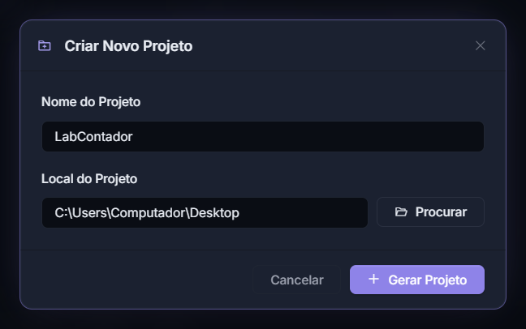
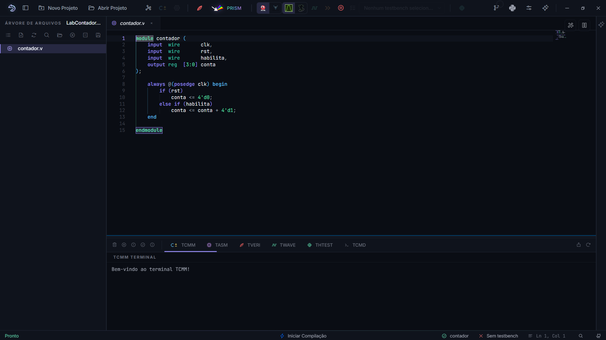
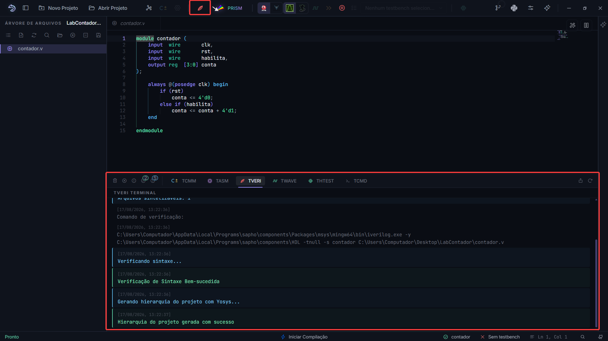
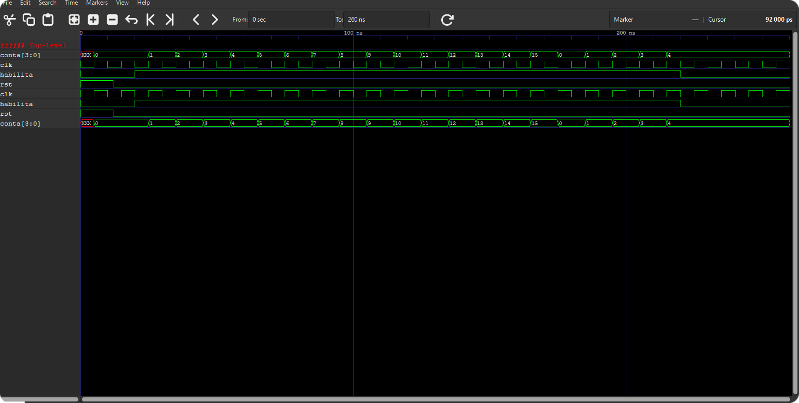

Tutorial: um contador em Verilog¶
Este é o primeiro tutorial do manual. Ao final, você terá criado um projeto, escrito um módulo Verilog e um testbench, validado o design, simulado e lido o resultado na forma de onda. Reserve uns vinte minutos.
O que vamos construir
Um contador de 4 bits com habilitação: conta a cada borda de clock enquanto habilita estiver em 1, e zera no reset. É o circuito sequencial mais simples que exercita o fluxo inteiro: clock, reset, registrador e testbench.
Nota
Com pressa? O botão Projetos de exemplo… da tela de boas-vindas cria um contador equivalente já pronto. O tutorial vale mais construído à mão, mas o exemplo serve de gabarito para conferir o seu.
Passo 1: criar o projeto¶
Clique em Novo Projeto, na barra superior ou na tela de boas-vindas.
Nomeie
LabContador. O nome aceita letras, números, sublinhado e hífen; sem espaços nem acentos.Clique em Procurar, escolha uma pasta com permissão de escrita e clique em Gerar Projeto.
{kind=link}

Figura 9 O formulário pede só nome e local. O campo de local é preenchido pelo botão Procurar.¶
Confira: a árvore mostra LabContador, vazio, e a barra de status passou a Pronto.
Passo 2: escrever o módulo¶
Na árvore, clique com o botão direito na área vazia e escolha Novo arquivo.
Nomeie
contador.ve salve dentro da pasta do projeto.Digite o módulo:
1module contador (
2 input wire clk,
3 input wire rst,
4 input wire habilita,
5 output reg [3:0] conta
6);
7
8 always @(posedge clk) begin
9 if (rst)
10 conta <= 4'd0;
11 else if (habilita)
12 conta <= conta + 4'd1;
13 end
14
15endmodule
Salve com Ctrl+S.
{kind=link}

Figura 10 Enquanto você digita, dois analisadores conferem o código: erros de sintaxe aparecem sublinhados na hora, e a análise semântica aponta sinais não declarados e portas incompatíveis.¶
Confira: na visão Arquivos, contador.v apareceu com o ícone de fonte sintetizável. A AURORA o classificou sozinha, lendo o conteúdo: sem initial, sem $finish, é circuito.
Passo 3: escrever o testbench¶
Crie um segundo arquivo, tb_contador.v:
1`timescale 1ns/1ps
2
3module tb_contador;
4
5 reg clk = 0;
6 reg rst = 1;
7 reg habilita = 0;
8 wire [3:0] conta;
9
10 contador dut (
11 .clk (clk),
12 .rst (rst),
13 .habilita (habilita),
14 .conta (conta)
15 );
16
17 always #5 clk = ~clk; // clock de 100 MHz
18
19 initial begin
20 $dumpfile("tb_contador.fst");
21 $dumpvars(0, tb_contador);
22
23 #12 rst = 0; // solta o reset fora da borda
24 #8 habilita = 1; // conta por 20 ciclos
25 #200 habilita = 0; // congela
26 #40 $finish;
27 end
28
29endmodule
Repare nos ingredientes que todo testbench tem: o clock gerado por always #5, o reset solto depois de alguns nanossegundos, o $dumpvars que grava os sinais para a forma de onda e o $finish que encerra a simulação.
Confira: o arquivo entrou na árvore com o ícone de testbench. initial, $finish e o nome começando com tb_ denunciaram a categoria.
Passo 4: definir os papéis¶
Um projeto pode ter dezenas de arquivos, e a AURORA precisa saber dois deles pelo nome: qual é o circuito e qual é o teste.
- Top Level
O módulo que está no alto da hierarquia, a raiz do seu projeto. É dele que a elaboração parte, e tudo o que ele instancia, direta ou indiretamente, faz parte do design. O que não for alcançável a partir do Top Level não participa: fica no projeto, mas fora do circuito. É também o módulo que você levaria à ferramenta do fabricante para gravar no FPGA, e o que o PRISM desenha quando abre. Aqui é o
contador.v, porque o contador é o circuito.- Testbench Top
O módulo que comanda a simulação, o que gera clock, reset e estímulos. Ele instancia o Top Level como um componente e o observa de fora. Não vai para o FPGA: existe só para exercitar o circuito na bancada. Aqui é o
tb_contador.v.
Marque cada um:
Botão direito em
contador.v, escolha Definir como Top Level.Botão direito em
tb_contador.v, escolha Marcar como Testbench.
Os dois papéis são exclusivos: marcar um arquivo novo desmarca o anterior. Se um dia a compilação reclamar de módulo não encontrado, ou a onda vier vazia, o primeiro lugar a conferir é este par.
Confira: a barra de status agora mostra os dois nomes, e os botões Sintetizar Verilog e Analisar Verilog acenderam.
Passo 5: validar¶
Clique em Sintetizar Verilog.
A AURORA elabora o projeto inteiro a partir do Top Level: resolve os módulos, confere portas e conexões, e monta a hierarquia de instâncias. Não é a síntese física do FPGA; é a prova de que o design fecha.
{kind=link}

Figura 11 O terminal TVERI relata a validação. Depois dela, o botão de visões da árvore ganha a opção Hierarquia.¶
Confira: alterne a árvore para a visão Hierarquia. Deve aparecer a instância do contador. Clicar nela abre o fonte na linha da definição.
Passo 6: simular e ler a onda¶
Confirme na barra de ferramentas: simulador Icarus Verilog, visualizador GTKWave.
Clique em Analisar Verilog.
A AURORA compila os fontes com o testbench, roda a simulação e abre o GTKWave com os sinais já organizados. Acompanhe o terminal TWAVE.
{kind=link}

Figura 12 A forma de onda do contador: o reset solta, habilita sobe e conta incrementa a cada borda de clock, de 0 a 15 e de volta a 0.¶
Procure na onda:
rstalto no início e a contagem presa em 0;contasubindo um a um a cada borda de subida do clock enquantohabilitaestá em 1;o estouro: depois de 15, o contador de 4 bits volta a 0;
a contagem congelada quando
habilitacai.
O que você aprendeu¶
Um projeto é uma pasta com um
.spf; os fontes entram por criação ou arraste.A AURORA separa circuito de testbench sozinha, pelo conteúdo do arquivo.
Top Level e Testbench Top são os dois papéis que você marca, e a barra de status os exibe sempre.
Sintetizar valida a elaboração e constrói a hierarquia; Analisar simula e abre a onda.
O testbench manda na simulação: clock, reset, estímulos,
$dumpvarse$finishsão seus.
Um segundo padrão: máquina de estados¶
O contador é o primeiro padrão sequencial; o segundo é a máquina de estados finitos, e vale construí-la já. Um semáforo simples: verde, amarelo, vermelho, cada um com sua duração.
Crie semaforo.v no mesmo projeto:
1module semaforo (
2 input wire clk,
3 input wire rst,
4 output reg [2:0] luz // {verde, amarelo, vermelho}
5);
6
7 localparam VERDE = 2'd0;
8 localparam AMARELO = 2'd1;
9 localparam VERMELHO = 2'd2;
10
11 localparam T_VERDE = 4'd8;
12 localparam T_AMARELO = 4'd2;
13 localparam T_VERMELHO = 4'd6;
14
15 reg [1:0] estado;
16 reg [3:0] tempo;
17
18 always @(posedge clk) begin
19 if (rst) begin
20 estado <= VERDE;
21 tempo <= 4'd0;
22 end else begin
23 tempo <= tempo + 4'd1;
24 case (estado)
25 VERDE: if (tempo == T_VERDE - 1) begin estado <= AMARELO; tempo <= 0; end
26 AMARELO: if (tempo == T_AMARELO - 1) begin estado <= VERMELHO; tempo <= 0; end
27 VERMELHO: if (tempo == T_VERMELHO - 1) begin estado <= VERDE; tempo <= 0; end
28 default: estado <= VERDE;
29 endcase
30 end
31 end
32
33 always @(*) begin
34 case (estado)
35 VERDE: luz = 3'b100;
36 AMARELO: luz = 3'b010;
37 default: luz = 3'b001;
38 endcase
39 end
40
41endmodule
O padrão em três blocos: os estados nomeados com localparam, um always sequencial com o registrador de estado e o temporizador, e um always combinacional com a saída em função do estado. Escreva um testbench nos moldes do anterior (solte o reset e deixe rodar uns 200 ciclos), marque os papéis e observe na onda o ciclo verde, amarelo, vermelho se repetindo. A visão Hierarquia agora mostra dois módulos de topo possíveis; o Top Level marca qual vale.
Exercícios¶
Faça o contador contar de 0 a 9 e reiniciar, virando um contador de década.
Acrescente um pino
sobe_desceao contador: 1 conta para cima, 0 para baixo. Confirme na onda os dois sentidos.Dê ao contador uma saída
estouro, em 1 apenas no ciclo em que a contagem volta a zero. Grave-a na onda.No semáforo, acrescente um pino de pedestre que, pressionado durante o verde, encurta o tempo restante para no máximo 2 ciclos. Cuidado com o caso do tempo já estar abaixo disso.
Para onde ir¶
As formas de onda em detalhe estão em Formas de onda, o fluxo em O fluxo Verilog em detalhe e os testbenches, incluindo cocotb, em Testbenches: Verilog e cocotb. Quando quiser gerar um processador em vez de escrever o circuito à mão, siga para a Parte III: Tutorial: um processador SAPHO.